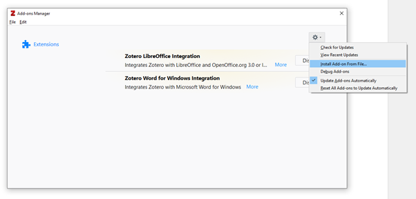
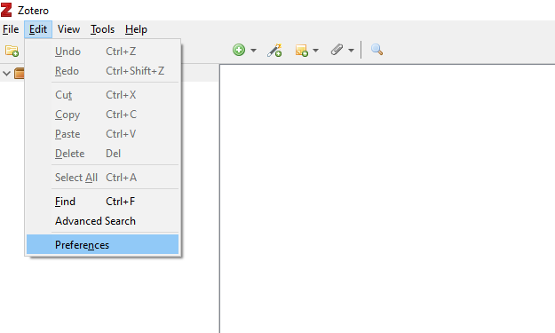
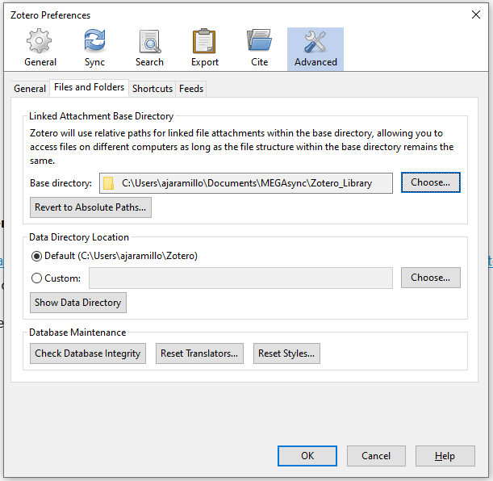
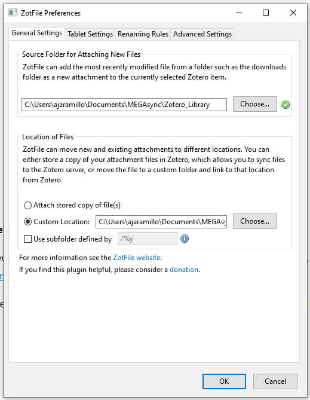
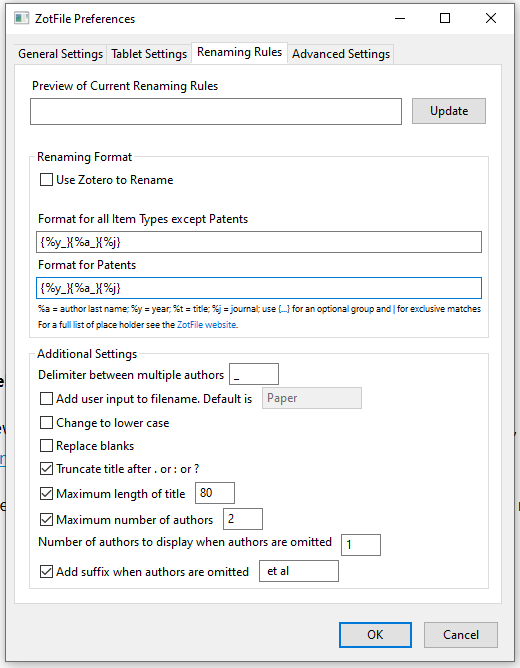

Manual de configuración de Zotero en Windows para sincronización de archivos con carpeta online
Alejandro Jaramillo Moreno
Introducción
Zotero es una gran herramienta para la organización de las referencias bibliográficas. Sin embargo, el espacio en la nube para almacenar los archivos pdf es muy limitado y las opciones de subscrición para aumentar el espacio disponible son extremadamente costosas, superando por mucho otras opciones en el mercado.
Existe una manera de superar esta dificultad almacenando la información bibliográfica en la nube, la cual consume muy poco espacio, y usando herramientas de almacenamiento en nube como Megaupload o similares para almacenar los archivos en pdf. Esto es posible gracias a la herramienta Zotfile y las configuraciones que aquí se mostraran y que permiten incluso mantener los archivos sincronizados entre equipos.
Se mostrará un paso a paso de la configuración de Zotero para mantener uno o mas equipos sincronizados.
Procedimiento
1. Instalación de Zotero
Se debe primero instalar el gestor de escritorio para Zotero, el cual puede descargarse del siguiente enlace:
https://www.zotero.org/download/
Una vez instalado debemos buscar el plugin Zotfile en el siguiente enlace:
https://www.zotero.org/support/plugins
Una vez descargado el plugin lo instalaremos ingresando al menú “Tools/Add-ons” y seleccionamos “Install Add-on From File”.
Una vez instalado nos pedirá que reiniciemos Zotero.
2. Creación de una carpeta sincronizada
Una vez reiniciado podremos configurar Zotero para sincronizarse con nuestra cuenta online y con la carpeta en donde almacenaremos los pdf. Para esto es necesario suscribirse a algún servicio de almacenamiento en la nube que cuente con un gestor de escritorio. En mi caso usaré el proporcionado por Mega el cual ofrece una cuenta gratuita con 50 Gb de almacenamiento en la nube. Dejo al lector los detalles particulares de la instalación y configuración de su carpeta sincronizada. En mi caso la carpeta sincronizada que usaré para Zotero se encuentra en:
C:\Users\ajaramillo\Documents\MEGAsync\Zotero_Library
3. Configuración de Zotero y Zotfile
Ingresaremos a preferencias de Zotero y comenzaremos nuestra configuración

En la pestaña de “Sync” ingresaremos nuestro nombre de usuario y contraseña. Para esto es necerio haber creado una cuenta gratuita en Zotero. Este paso no es necesario, pero de no hacerlo no podríamos sincronizar fácilmente las referencias bibliográficas. Una vez accedemos a nuestra cuenta, aparecerán unas opciones que debemos configurar como se muestra a continuación:

Nos movemos ahora a la pestaña “Advanced” e ingresaremos a “Files and Folders”. Aquí ingresaremos la ruta a nuestra carpeta donde almacenaremos los pdf. Debemos organizar las opciones como se muestra a continuación:

Presionamos Ok y antes de hacer cualquier otro movimiento en Zotero iremos a la configuración de Zotfile en “Tools/ZotFile Preferences”.
En la pestaña “General Settings” ingresamos la ruta a nuestro directorio como se muestra a continuación

En la pestaña “Renaming Rules” realizamos la siguiente configuración

Debo aclarar que esta configuración ha sido según mis preferencias personales y se puede explorar y jugar con las posibilidades que brinda Zotfile para administrar los archivos. Sin embargo, debo advertir que configuraciones mas sofisticadas podrían causar conflictos en caso de que se quieran sincronizar equipos que tengan diferentes sistemas operativos (SO), por ejemplo, un equipo con Windows y otro en Linux. Esto debido a las diferencias en las rutas y formatos de los nombres de archivo entre estos SO.